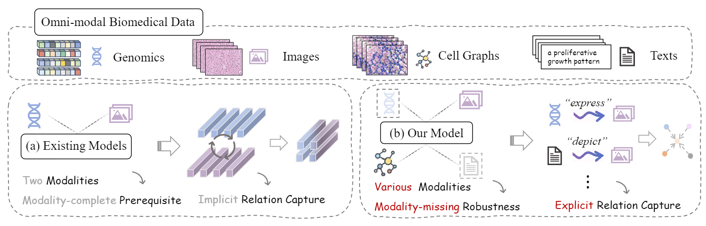
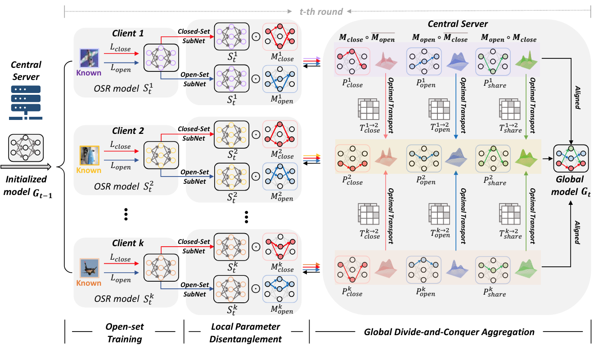

Yifan Liu
Research Interests:
- Video/3D World Model
- 3D Reconstruction
- Generative AI
About
I am a final-year Ph.D. student in the Department of Electronic Engineering at the Chinese University of Hong Kong (CUHK), supervised by Prof. Yixuan Yuan. Prior to that, I received my B.Eng. in Electronic Information Engineering from Huazhong University of Science and Technology (HUST) in 2021. During my Ph.D., I have been fortunate to work with Dr. Zhenwei Wang and Dr. Tengfei Wang at the Tencent Hunyuan 3D Center, World Model Team.
News
- [04/2026] Our paper WorldMirror is accepted by ICML 2026!
- [10/2025] Our work WorldMirror is released. Check it out!
- [02/2025] Our paper MonoSplat is accepted by CVPR'25.
- [02/2025] Our paper EndoGaussian is accepted by TMI'25.
- [01/2025] Our paper InstantSplamp is accepted by ICLR'25. Congrats to Chenxin and Hengyu.
- [01/2025] Our paper Hide-in-Motion is accepted by ICRA'25. Congrats to Hengyu.
- [12/2024] Our paper U-KAN is accepted by AAAI'25. Congrats to Chenxin.
- [06/2024] Our LGS, Endora, and EndoSparse are accepted by MICCAI'24. Congrats to Hengyu and Chenxin.
- [05/2024] Our paper SAMTooth is accepted by MICCAI'24 (early accept, 11%).
- [03/2023] Our paper GRAB-Net is accepted by IEEE TMI'23. (IF. 11.037).
Experience
-
Research Intern, Tencent Hunyuan, X Center, World Model Team
-
Research Intern, Tencent Hunyuan, 3D Center, World Model Team
Selected Publications [full list]
(*equal contribution)
|
ICML 2026
|
WorldMirror: Universal 3D World Reconstruction with Any-Prior PromptingInternational Conference on Machine Learning (ICML 2026) A universal 3D reconstruction framework capable of processing diverse input modalities and generating various output representations. |
|
CVPR 2025
|
MonoSplat: Generalizable 3D Gaussian Splatting from Monocular Depth Foundation ModelsIEEE/CVF Conference on Computer Vision and Pattern Recognition (CVPR 2025) A generalizable 3D Gaussian Splatting approach from monocular depth foundation models. |
|
ICLR 2025

|
InstantSplamp: Fast and Generalizable Stenography Framework for Generative Gaussian SplattingInternational Conference on Learning Representations (ICLR 2025) An initial exploration into embedding customizable, imperceptible, and recoverable information within the renders produced by off-the-line 3D generative models, while ensuring minimal impact on the rendered content's quality. |
|
IEEE TMI 2025

|
Foundation Model-guided Gaussian Splatting for 4D Reconstruction of Deformable TissuesIEEE Transactions on Medical Imaging (IEEE TMI), 2025 The first work to apply 3D Gaussian Splatting for dynamic (4D) endoscopic reconstruction, guided by foundation models. |
|
AAAI 2025

|
U-KAN Makes Strong Backbone for Medical Image Segmentation and GenerationAAAI Conference on Artificial Intelligence (AAAI 2025) Introducing Kolmogorov-Arnold Networks (KANs) as a strong backbone for medical image segmentation and generation. |
|
ICCV 2025

|
GaussianReg: Rapid 2D/3D Registration for Emergency Surgery via Explicit 3D Modeling with Gaussian PrimitivesIEEE/CVF International Conference on Computer Vision (ICCV 2025) Rapid 2D/3D registration for emergency surgery using sparse Gaussian primitives and a ray-based registration scheme. |
|
ECCV 2024
 |
GTP-4o: Modality-prompted Heterogeneous Graph Learning for Omni-modal Biomedical RepresentationEuropean Conference on Computer Vision (ECCV 2024) A heterogeneous graph framework for unified omni-modal biomedical representation that handles missing modalities. |
|
ICCV 2023
 |
FedPD: Federated Open Set Recognition with Parameter DisentanglementIEEE/CVF International Conference on Computer Vision (ICCV 2023) A federated open-set recognition framework with parameter disentanglement for cross-client closed/open-set learning. |
Professional Activities
-
Conference Reviewer: NeurIPS, ICLR, ICML, CVPR, ICCV, ECCV, AAAI
-
Journal Reviewer: TPAMI, TIP, TVCG, TMM, TCSVT, TMI, MIA
Selected Awards
-
Self-Reliance Scholarship2019-2020
-
Scholarship of Academic Excellence2017-2020
-
Outstanding Graduates of Huazhong University of Science and Technology2021